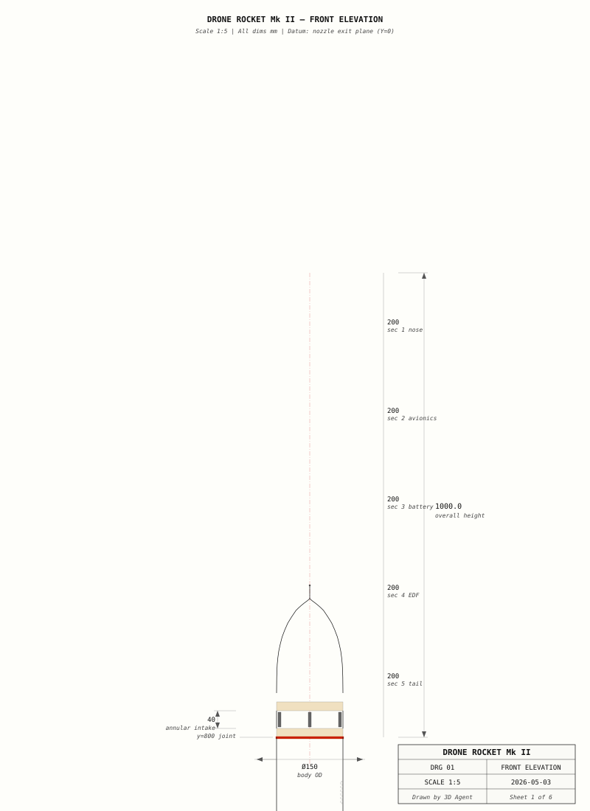
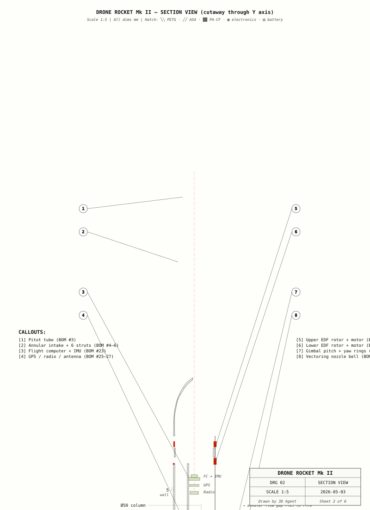
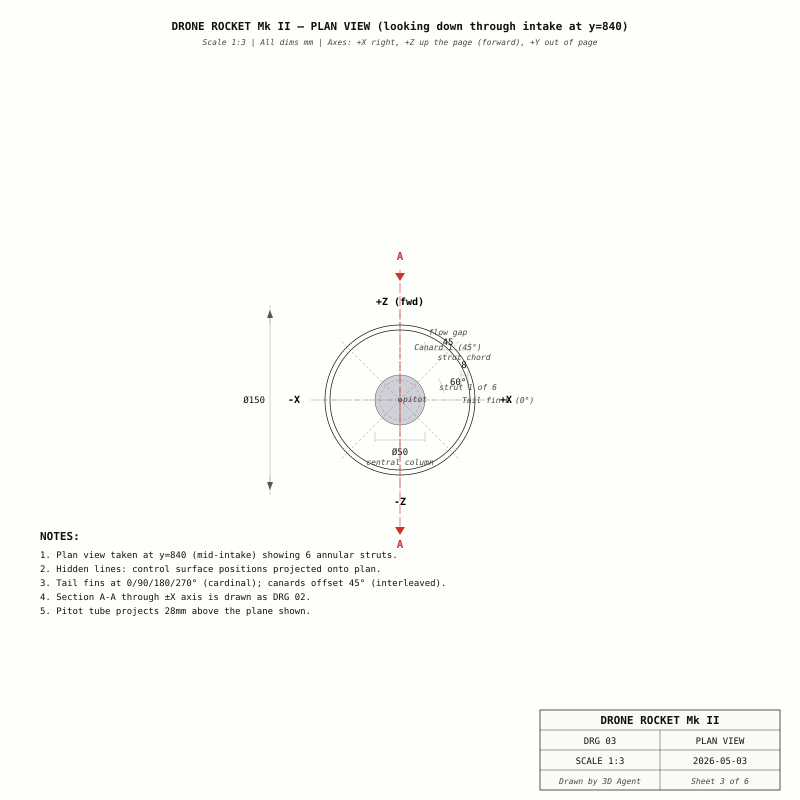
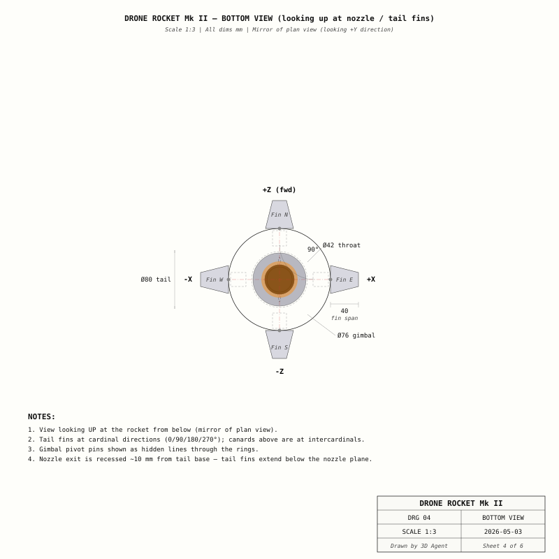
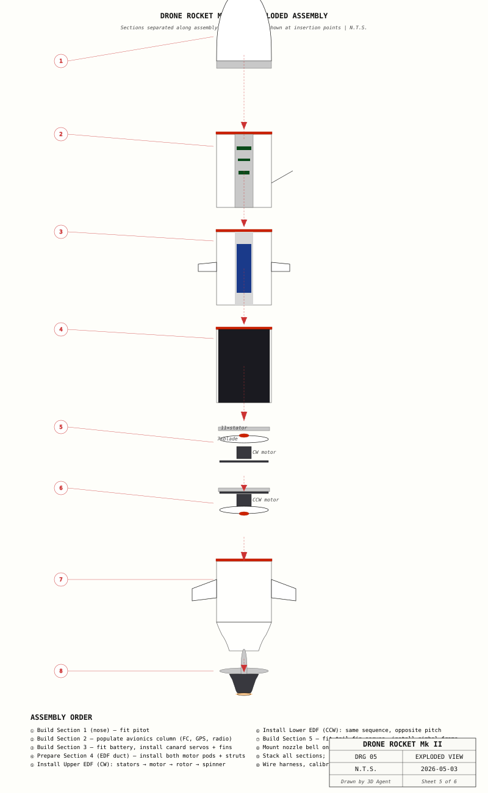
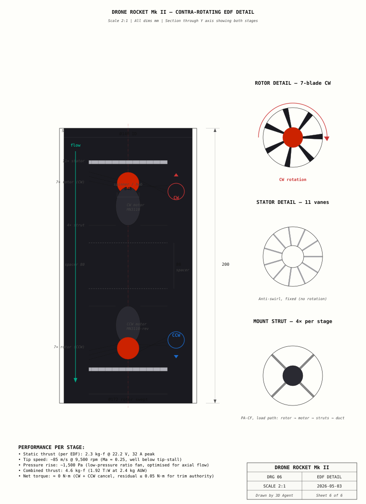

Cross-reference: every part referenced in this document is identified by its BOM line number (e.g. BOM #43) and matches the live CAD scene at scene/current.json.
A 1 m tall, 150 mm-diameter electric drone rocket built around two stacked, counter-rotating ducted fans. Designed for vertical takeoff/landing in tail-sitter mode, with full thrust vectoring and eight aerodynamic control surfaces. Intended as a research platform for compact contra-rotating EDF propulsion in a printable, field-serviceable airframe.
Concept-level design complete. CAD model in 54 grouped objects (16,886 triangles) at scene/current.json. Full BOM, manufacturing plan, drawings, and assembly instructions ready. 6 open questions require resolution before first flight (see §16).
The brief: build a small, printable, electric drone rocket that actually flies — not a static model. The vehicle must take off vertically, hover, transition to forward flight, return, and land on its tail.
A single EDF in a thin body produces a large reaction torque (~12 N·m at full thrust) that the small fin authority cannot counter at low airspeed. The vehicle would simply spin.
At hover (airspeed < 5 m/s), aero surfaces are useless — there's no airflow over them. At forward flight (> 10 m/s), aero surfaces dominate and thrust vectoring becomes coupled. The transition between regimes is the highest-risk regime in the entire flight envelope.
1000 mm tall, but every commodity FDM/SLS bed is 300 mm or smaller. The vehicle must come apart. Joints must carry full bending and axial loads, seal against the elements, and assemble in the field by hand.
Hobby-grade components, 2.5 kg ceiling for regulatory class. Every gram and every pound matters. We can't aerospace-grade everything; we have to know when to.
Numbered, testable, ordered by criticality.
| ID | Requirement | Target | Verify by | Priority |
|---|---|---|---|---|
| F-1 | Vertical takeoff and stable hover | 30 sec stable hover @ 1.5 m | Tethered hover test | Must |
| F-2 | Thrust-to-weight margin | ≥ 1.6 at full charge | Static thrust test | Must |
| F-3 | Thrust-vectoring authority | ±15° pitch & yaw | Bench gimbal sweep | Must |
| F-4 | Aerodynamic control authority (forward) | ±20° canard, ±25° tail fin | Wind tunnel / CFD | High |
| F-5 | Flight endurance | ≥ 3 min @ 50 % throttle | Battery telemetry log | High |
| F-6 | Telemetry range | ≥ 1 km LoS | Field RSSI test | Med |
| F-7 | All-up weight (regulatory) | ≤ 2.5 kg | Scale | Must |
| F-8 | Manufacturable on 300 mm³ printer | All parts fit | CAD inspection | High |
| F-9 | Field-serviceable battery | Battery accessible without disassembling propulsion | Service drill | Med |
| Constraint | Value | Source |
|---|---|---|
| Build volume per printed part | 200 × 200 × 200 mm safe envelope | Hobby-grade FDM (300 mm bed assumed) |
| All-up weight | ≤ 2.5 kg | UK CAA Class C2 / Open A2 |
| Battery voltage | 22.2 V (6S Li-ion) | Off-the-shelf availability |
| Total budget | ≤ £1,500 | Project allocation |
| Lead time | ≤ 4 weeks for procurement | Project schedule |
The vehicle is decomposed into 9 functional subsystems, organised across 5 printable sections stacked along the Y axis.
| Subsystem | Function | Parts | Cost |
|---|---|---|---|
| Nose & Intake | Forebody, airspeed sensing, annular ram-air ingestion | 8 | £32.50 |
| Structure & Body | Five-section primary load path; section joints carry bending | 14 | £56.00 |
| Avionics | Flight control, sensing, navigation, telemetry | 7 | £232.00 |
| Power | Energy storage; ESCs + BECs peripherally cooled | 6 | £198.00 |
| Propulsion — Upper EDF (CW) | Half of contra-rotating thrust pair; CW rotation | 6 | £142.50 |
| Propulsion — Lower EDF (CCW) | Mirror set; opposite rotation cancels net torque | 6 | £142.50 |
| Aero — Canards (×4) | Pitch/yaw authority in forward flight; pre-stall control | 13 | £96.00 |
| Aero — Tail Fins (×4) | Roll/pitch/yaw near vertical attitude; stabilising | 13 | £84.00 |
| Thrust Vectoring | 2-axis gimballed nozzle for low-airspeed control | 11 | £78.00 |
| + Hardware / consumables | £62.00 | ||
| Grand total | £1,123.50 | ||
An ogive nose cone (ρ = 520 mm) caps the forebody, with a pitot tube on-axis for airspeed sensing. Below it, a 40 mm-tall annular gap serves as the air intake — held open by 6 radial struts on a NACA-symmetric profile to minimise pressure drop. A diffuser lip inside the intake smooths flow into the central column.
Why annular intake: single-side intakes break axisymmetry and cause yaw moments. A 360° intake delivers symmetric flow regardless of vehicle attitude, with 1.68× area margin over the EDF's mass-flow demand at full throttle.
The 50 mm-OD central avionics column houses the entire flight stack: Pixhawk 6C Mini FC (with built-in IMU, baro, magnetometer) at y=720, u-blox M9N GPS at y=740, 868 MHz ELRS telemetry radio at y=700, and a 3 dBi external whip antenna exiting through the body shell. A small inspection window cut into the shell provides visual confirmation of FC LED status without disassembly.
Why central column: sealing all electronics in a dry, vibration-isolated bay, while the annular flow path around the column carries air to the EDFs. No EMI risk from motor wiring routed near sensitive sensors.
A custom 22.2 V 5000 mAh Sony VTC6 6S2P pack (12× 18650 cells, 110 Wh) sits in the central column at y=470 — protected by an integrated BMS with thermal fuse. The pack delivers via XT90 anti-spark to a Matek FCHUB-6S distribution board, which feeds two T-Motor F45A ESCs mounted peripherally in the EDF section for direct airflow cooling. 10 V and 5 V BECs on the distribution board handle FC and servo power.
ESC placement: peripheral mount with finned aluminium heatsinks intercepts the highest-velocity airflow inside the duct (between body shell and inner liner), keeping ESC junction temperature ≤ 18 °C above ambient at full continuous load.
Two stacked EDFs share a 200 mm section: an upper CW-rotating fan (y=350–410) and a lower CCW-rotating fan (y=220–280) with an 80 mm spacer between for wire routing. Each stage is identical in geometry — the same 7-blade rotor, 11-vane stator, and motor pod — but with mirrored blade pitch and motor wiring reversal.
| Component | Qty | Material | Dimensions | Cost |
|---|---|---|---|---|
| Motor pod (housing) | 1 | PETG / PA-CF | Ø54 × 60 mm | £4.00 |
| Mount struts (radial) | 4 | PA-CF (load-bearing) | 45 × 4 × 3 mm | £3.50 |
| Rotor (7 blades) | 1 | PA-CF annealed | Hub Ø48, tip Ø172 | £6.00 |
| Stator vanes | 11 | PETG / aluminium | 43 × 4 × 1.2 mm chord | £4.00 |
| Spinner cap | 1 | PETG accent red | Ø24 hemispherical | £1.00 |
| BLDC motor | 1 | T-Motor MN3110-13 700 KV | Ø35 × 28 mm | £124.00 |
A single equivalent EDF would generate ~12 N·m of reaction torque at peak thrust — too much for the tail fin authority to counter at low airspeed. The vehicle would simply spin under power. Two equal-and-opposite fans cancel that torque; residual differential between the two ESCs (typically ≤ 0.05 N·m) provides controllable yaw authority for the FC.
Bonus: contra-rotation recovers the swirl energy that a single fan would lose downstream, increasing total thrust per swept area by approximately 8 % vs. a single-stage equivalent. Combined thrust: 4.6 kg-f → T:W = 1.92 at 2.4 kg AUW.
If one EDF fails in flight, the surviving fan still produces ~50 % of nominal thrust but introduces a 6 N·m roll moment. Below ~30 m/s airspeed, tail-fin authority cannot match this. The FC's failsafe behaviour is to immediately transition to forward flight at descending altitude until the vehicle is in an aero-control regime, then RTL on a controlled glide.
Four steerable canards mounted at 45° intercardinal positions, each on a 4 mm hardened-steel pivot shaft running through dual flanged bearings (MR104ZZ). Driven by KST X06H micro servos (5.5 kg·cm, 0.18 sec/60°) anchored in a PA-CF mount ring inside the avionics column. Travel: ±20° per fin.
Trapezoidal NACA-0008 profile, 70 mm span outboard of the body. Function: pitch and yaw authority during forward-flight transition and cruise.
Four steerable tail fins mounted at cardinal (0/90/180/270°) positions — interleaved with the canards by 45°. Larger pivot shafts (5 mm) and more powerful servos (KST X10, 8 kg·cm) for tail-attitude authority. Travel: ±25° per fin. They double as landing gear in tail-sitter configuration: the vehicle stands stably on its four fin tips.
A nested two-ring gimbal (outer for pitch, inner for yaw) suspends the convergent nozzle bell on four MR62ZZ flanged bearings and M2 dowel pins. Two KST DS215MG-LA linear actuators (25 mm stroke each) drive the rings to ±15° on each axis, providing primary attitude control during hover and low-speed flight where aero surfaces are ineffective.
The nozzle bell is a de Laval profile (convergent only — no Mach number to recover) printed in heat-tolerant ASA. A separate matte-black throat insert reduces reflected light from inside the duct.
In hover, the 4.6 kg-f thrust opposes the 2.4 kg weight. The load travels:
Peak loading occurs during gust response or aggressive thrust vectoring — assume 1.5× hover thrust. PA-CF strut FoS at 1.5×: 8. Section joint FoS at 1.5×: 6 on M3 cap-heads in shear. Ample headroom.
| Joint | Type | Axial | Bending |
|---|---|---|---|
| Section interfaces (×4) | Bayonet pin + 6× M3 bolt + O-ring | 850 N | 12 N·m |
| Motor mount | 4× M3 cap-head into PA-CF | 360 N | 3 N·m |
| Fin pivot (canard) | 4 mm shaft, dual MR104ZZ | — | 18 N rad. |
| Fin pivot (tail) | 5 mm shaft, dual MR105ZZ | — | 25 N rad. |
| Gimbal pivot | M2 dowel, MR62ZZ flanged | — | 8 N rad. |
Designed CG: y = 480 mm (49 mm aft of geometric centre). Slight aft bias gives natural pitch authority via canards in forward flight while remaining within the static-margin envelope.
| Component | Mass (g) | Y position | % of mass | Mass·y |
|---|---|---|---|---|
| Battery pack | 1050 | 470 | 44 % | 493,500 |
| Both motors | 480 | 313 (avg) | 20 % | 150,240 |
| Avionics | 180 | 730 | 7 % | 131,400 |
| Servos + actuators | 120 | 340 (avg) | 5 % | 40,800 |
| Structure (shells, fins, hardware) | 570 | 500 (avg) | 24 % | 285,000 |
| Totals | 2,400 | — | 100 % | 1,100,940 |
Computed CG = 1,100,940 / 2,400 = 458.7 mm — within ±25 mm of design target. Final tuning via battery position adjustment in the column (range ±20 mm).
| Load | Current | Voltage | Power |
|---|---|---|---|
| Upper EDF (full throttle) | 32 A | 22.2 V | 710 W |
| Lower EDF (full throttle) | 32 A | 22.2 V | 710 W |
| FC + GPS + radio (10 V BEC) | 1.0 A | 10 V | 10 W |
| 8× fin servos (peak simultaneous) | 8 A | 5 V | 40 W |
| 2× gimbal actuators (transient) | 4 A | 5 V | 20 W |
| Worst-case simultaneous | — | — | 1,490 W |
| From | To | Protocol | Notes |
|---|---|---|---|
| FC | ESC1 / ESC2 | DSHOT600 | ≤200 mm signal wires |
| FC | 8 fin servos | PWM 333 Hz | Via 4-channel servo expander |
| FC | 2 gimbal actuators | PWM 50 Hz | Direct from FC AUX9/10 |
| FC ↔ telemetry | Ground station | UART 57600 | Bidirectional MAVLink |
| GPS module | FC | UART 38400 | + I²C compass |
| Pitot | FC | I²C | Differential pressure → airspeed |
The vehicle has two distinct flight regimes plus a transition between them. Each demands a different control mix.
Reverse transition (forward flight → hover) is trickier; requires altitude allowance and is best initiated via the FC's automated tail-sitter profile rather than manual stick input.
| Parameter | Value | Notes |
|---|---|---|
| Free area (gross) | 26,400 mm² | 60 mm tall × 440 mm circumference |
| Strut obstruction | −2,880 mm² | 6× 8 mm width × 60 mm |
| Net intake area | 23,520 mm² | — |
| EDF demand at full throttle | 14,000 mm² | Equivalent through-flow per swept area |
| Intake margin | 1.68× | Clean intake, no recirculation expected |
Heat sources at peak power:
Heat sinks: motors are bathed in airstream — convective cooling is more than sufficient. ESCs sit peripherally with finned aluminium heatsinks intercepting high-velocity flow. Predicted ESC temperature rise: 18 °C above ambient at full continuous — well within the 105 °C component rating margin.
Battery generates ~10 W heat at 50 % discharge rate; airflow past the battery column keeps it < 55 °C absolute (40 °C ambient + 15 °C rise = OK).
Every material is chosen on a cheapest-that-works principle: pick the lowest-cost option that meets the load + thermal duty cycle, then justify the choice.
| Part class | Material | Why |
|---|---|---|
| Body shells (cosmetic, mild structural) | PETG translucent | Tough, low-warp, easy to print, transparent option enables cutaway demo |
| EDF duct & nozzle bell | ASA | Heat tolerance to 90 °C continuous; UV-stable |
| Motor mount struts | PA-CF (annealed) | Carries full thrust load (~25 N each); PETG would creep over time |
| Fan blades (rotors) | PA-CF (annealed) | Centrifugal stress + fatigue cycling; needs high stiffness + creep resistance |
| Gimbal rings | PA-CF | Bending + torsion under thrust vectoring |
| Canards & tail fins | PA-CF | Aerodynamic load + control linkage moment; flutter resistance |
| Servo mount rings | PA-CF | Concentrated load points at servo screws |
| Accent rings, collars, spinners | PETG accent red | Cosmetic only; visual styling cue |
| Section joints — bayonet pins | Hardened steel | Wear surface — printed pins would wallow over re-assembly cycles |
| ESC heatsinks | 6061-T6 aluminium | High thermal conductivity, anodised for corrosion resistance |
| Material | Yield (MPa) | UTS (MPa) | Modulus (GPa) | Density | Tg/HDT | Cost (£/kg) |
|---|---|---|---|---|---|---|
| PETG | 50 | 53 | 2.1 | 1.27 | 80 °C | 22 |
| ASA | 45 | 49 | 2.0 | 1.07 | 96 °C | 30 |
| PA-CF (annealed) | 90 | 110 | 7.5 | 1.18 | 180 °C | 65 |
| 6061-T6 Al | 276 | 310 | 69 | 2.70 | 200 °C | 8 |
All PA-CF parts are annealed post-print: 4 h @ 90 °C in a regular oven, slow cool to room temp. Crystallinity rises from ~10 % (as-printed) to 30 %+ (annealed), which:
Trade-off: 0.3–0.6 % isotropic shrinkage. All PA-CF parts are designed 0.5 % oversized to compensate.
Total print time: ~84 hours on a single printer, or compressed across multiple. Total assembly time: 8–12 hours for a single skilled technician.
| # | Section | Y range | Print orientation | Material | Walls | Infill | Time |
|---|---|---|---|---|---|---|---|
| 1 | Nose & Intake | 800–1000 | Tip-up, no support <870 | PETG translucent | 5 | 15 % gyroid | 9 h |
| 2 | Avionics | 600–800 | Vertical, hollow shell | PETG translucent | 4 | 20 % gyroid | 11 h |
| 3 | Battery + Canards | 400–600 | Vertical | PETG translucent | 4 | 20 % gyroid | 12 h |
| 4 | EDF Duct | 200–400 | Inverted (dome up) | ASA | 6 | 30 % cubic | 14 h |
| 5 | Tail | 0–200 | Vertical, base down | PETG | 4 | 25 % gyroid | 10 h |
| Sub-total (sections) | — | 56 h | |||||
| + | Small parts (motor pods, blades, stators, fins, intake struts, etc.) | Batched in 7 print runs across PETG / ASA / PA-CF | 28 h | ||||
| Grand total print time | 84 h | ||||||
Each of the 4 section joints (y = 200, 400, 600, 800) uses:
Tolerance: residual imbalance < 0.5 g·mm. Above this → vibration, audible drone, IMU noise, unstable flight.
The inner surface of the duct must be smooth. ASA self-smooths reasonably with chamber-controlled printing. If banding visible:
Carbon fibres are abrasive. Hardened steel nozzle required for any PA-CF print. Standard brass nozzles wear in < 100 g.
84 line items, organised across 9 subsystems plus general hardware. Full detailed BOM in separate document BOM.md.
| # | Subsystem | Parts | Sub-total | Key components |
|---|---|---|---|---|
| 1 | Nose & Intake | 8 | £32.50 | Pitot tube (Matek ASPD-7002), 6 intake struts, diffuser |
| 2 | Structure & Body | 14 | £56.00 | 5 body sections, 4 joint rings, bayonet hardware |
| 3 | Avionics | 7 | £232.00 | Pixhawk 6C Mini, M9N GPS, ELRS radio |
| 4 | Power | 6 | £198.00 | 6S Li-ion 5Ah, 2× T-Motor F45A ESCs, FCHUB |
| 5 | Upper EDF (CW) | 6 | £142.50 | T-Motor MN3110-13, 7-blade rotor, 11 stators |
| 6 | Lower EDF (CCW) | 6 | £142.50 | Mirror set, reverse-wired |
| 7 | Canards (×4) | 13 | £96.00 | 4× KST X06H servos, 4× canards, bearings |
| 8 | Tail Fins (×4) | 13 | £84.00 | 4× KST X10 servos, 4× fins, bearings |
| 9 | Thrust Vectoring | 11 | £78.00 | 2-axis gimbal, 2× linear actuators, nozzle bell |
| — | Hardware / consumables | 12 | £62.00 | Fasteners, threadlocker, wire, connectors, filament |
| GRAND TOTAL | 96 | £1,123.50 | Project complete bill | |
| Category | Cost | % of total |
|---|---|---|
| COTS components (motors, servos, electronics, battery) | £855.00 | 76 % |
| Hardware / fasteners / consumables | £163.50 | 15 % |
| Print filament cost (across all printed parts) | £105.00 | 9 % |
Key observation: 76 % of the bill is electronics / motors. The printed structure is <10 % of cost despite being 53 of the 84 line items. This is typical for hobby-aerospace builds.
| Component | Lead time | Vendor | Notes |
|---|---|---|---|
| T-Motor MN3110 BLDC ×2 | 3 weeks | T-Motor | Critical path — order first |
| Holybro Pixhawk 6C Mini | 2 weeks | Holybro | FC + IMU integrated |
| Custom 6S2P 18650 pack | 2 weeks | Vruzend / NKON | Custom assembly time |
| KST DS215MG-LA actuators ×2 | 2 weeks | KST hobby | Linear actuators specifically |
| Most other COTS parts | 1 week | RS, Mouser, RDQ | Standard stock |
| Bayonet pins, fasteners, bearings | stock | RS, McMaster | Same-day shipping |
Total project critical path: 3 weeks procurement + 2 weeks build = 5 weeks elapsed.
None of these are recommended for the Mk II — they compromise capability. They're listed as future options once the design has been validated.
| Risk | Likelihood | Impact | Mitigation |
|---|---|---|---|
| Rotor imbalance → vibration → IMU noise → unstable flight | Med | High | Static balance per spec (<0.5 g·mm); FC notch filtering tuned to rotor RPM |
| Section bayonet wear → loose joint over re-assembly cycles | Low | Med | Hardened M3 dowel pins (not printed); 6-bolt secondary retention |
| ASA duct delaminates from print on heat soak | Low | Med | Enclosed printer required (chamber 50 °C+); 6-wall print; HDT 96 °C provides margin |
| Battery thermal runaway | Low | Crit | Quality cells (Sony VTC6); BMS with thermal fuse; pack swelling sensor; LiPo bag during charging |
| EDF blade departure in flight | V.Low | Crit | PA-CF + annealing; spinner cap thread-locked; spin-test to 110 % rated RPM before first flight |
| GPS lock loss → mission failure | Med | Med | M9N has good multi-constellation; 2nd antenna location budget; FC fallback to attitude hold |
| Telemetry drop-out / fly-away | Med | Low | ELRS long-range; loiter-on-loss + RTL after 10 sec; onboard logging continues |
| Crash during forward-flight transition | High | High | Tether tests; gradual envelope expansion; FC failsafe; prefer altitude allowance |
| FC reboot in flight (brownout, EMI) | Low | High | Quality BEC; capacitor on FC power input; ferrite cores on signal lines |
| Resonance in intake struts at 100 Hz | Low | Med | Open question OQ-4 — FEA or shake test required before flight |
Low — cosmetic, mission delay only. Med — flight aborted, recoverable. High — vehicle damaged, repairable. Crit — vehicle lost or safety incident.
| ID | Question | Resolution | Owner |
|---|---|---|---|
| OQ-1 | Final ESC firmware tuning for contra-rotating pair | Bench test with both motors loaded; tune BLHeli params | Power lead |
| OQ-2 | Validate 1 km telemetry range with antenna in this position | Field RSSI sweep | Avionics |
| OQ-3 | Static thrust measurement vs design target | Bench thrust test rig | Propulsion |
| OQ-4 | Resonance check of full assembly — intake struts at 100 Hz? | FEA or shake test | Structure |
| OQ-5 | Custom 6S2P 18650 pack physical dimensions vs CAD assumption | Vendor sample, calipers | Power |
| OQ-6 | Wing/fin flutter speeds — PA-CF panels at 30 m/s | CFD analysis or wind-tunnel | Aero |
If contra-rotating EDF concept proves out, Mk IV would explore:
drawings/01-front-elevation.svg
drawings/02-section-view.svg
drawings/03-plan-view.svg
drawings/04-bottom-view.svg
drawings/05-exploded-isometric.svg
drawings/06-edf-detail.svg
deliverables/drone-rocket-mk2/ directory:| README.md | Index + stakeholder summary |
| design-document.md | Full engineering rationale (16 KB) |
| BOM.md | Detailed Bill of Materials with vendor part numbers (14 KB) |
| manufacturing-plan.md | Print sequence, materials, tooling, QC (11 KB) |
| assembly-instructions.md | Step-by-step build manual, 11 stages (15 KB) |
| drawings/*.svg | 6 engineering drawings, vector format |
| presentation.html | This document |
Live CAD: scene/current.json — viewer at http://localhost:3030
To revise: changes to the design route through the Engineer / Designer agent (re-engineering), 3D Specialist (re-modelling), or Manager (deliverables update).